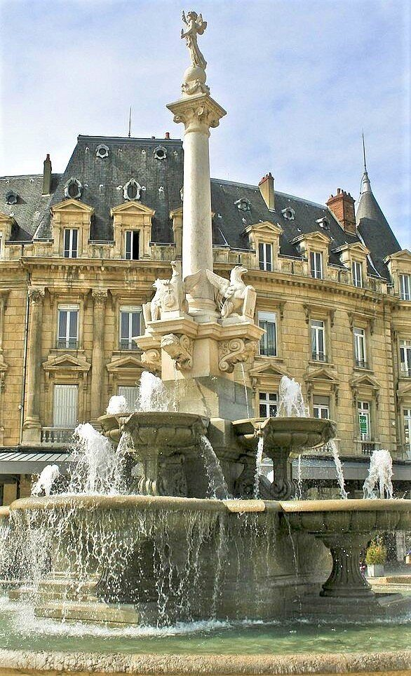

Valence, de hoofdstad van de Drôme, ligt tegenover de Ardèche aan de andere kant van de Rhône, met het silhouet van het Château de Crussol erboven. Op ongeveer 35 minuten van Les Cabritas is het een stad op mensenmaat, aangenaam om in een halve dag te voet te verkennen.

De Kiosque Peynet, symbool van de stad
De Kiosque Peynet, gebouwd in 1862 en sinds 1982 beschermd historisch monument, kijkt uit over het Parc Jouvet. Hij dankt zijn wereldfaam aan tekenaar Raymond Peynet, die tijdens een bezoek aan Valence werd geïnspireerd om een jonge violist te tekenen die voor zijn geliefde speelde: deze figuren, bekend geworden als 'Les Amoureux de Peynet' (de Geliefden van Peynet), kenden internationaal succes.
Wandelen door het historische centrum
Het Champ de Mars, een onmisbaar centraal plein, biedt een prachtig uitzicht over de heuvels van de Ardèche, het Parc Jouvet en het Château de Crussol. Het Parc Jouvet zelf, met 7 hectare gazons, eeuwenoude bomen en fonteinen, is een echte groene oase, ideaal voor een pauze met het gezin. Mis ook de Maison des Têtes niet, versierd met talrijke gebeeldhouwde hoofden, en de kathedraal Saint-Apollinaire, het oudste gebouw van de stad.
Goed om te weten voor uw bezoek
Het compacte, deels autovrije centrum leent zich goed voor een bezoek van een halve dag. Valence is perfect te combineren met het Château de Crussol, recht aan de overkant van de rivier op de Ardèche-oever, voor een volle dag stadswandelen en middeleeuws erfgoed.
Praktische informatie vanuit Les Cabritas
- Afstand vanaf Flaviac: ongeveer 35 min rijden
- Beste periode: het hele jaar door
- Ideaal voor: een stadswandeling, cultuur, lekker eten
Zin om Valence te ontdekken vanuit uw vakantiehuis in de Ardèche?
Les Cabritas verwelkomt u in Flaviac, in het hart van de Ardèche, voor een comfortabel verblijf met privézwembad, vlak bij de mooiste plekken van de streek.
Beschikbaarheid bekijken